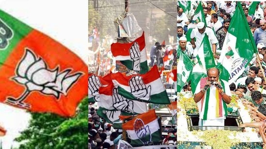

1. Two LeT terrorists killed in encounter in Jammu and Kashmir's Baramulla
An encounter broke out between security forces and militants in the Baramulla district of Jammu and Kashmir on Thursday.

The terrorists, identified as Shakir Majid Najar and Hanan Ahmad Seh from Shopian district, belonged to the proscribed terror outfit Lashkar-e-Taiba.(ANI / Represenational Image)
Two terrorists were killed in an encounter with security forces in the Baramulla district of Jammu and Kashmir, police said. The encounter broke out in the early hours of Thursday in the Wanigam Payeen Kreeri area of Baramulla after security forces landed a cordon and search operation acting on specific input about the presence of militants, reported PTI.
According to police, the search operation turned into an encounter after the militants fired upon a search party of the forces, who retaliated. Police said incriminating materials, arms and ammunition, including an AK 47 rifle and a pistol, were recovered from the terrorists killed in the encounter.
Kashmir Zone Police tweeted: “#BaramullaEncounterUpdate: Two #terrorists neutralised. Identification being ascertained. #Incriminating materials, arms & ammunition including 01 AK 47 rifle and one pistol recovered.”
The terrorists, identified as Shakir Majid Najar and Hanan Ahmad Seh from Shopian district, belonged to the proscribed terror outfit Lashkar-e-Taiba, Additional Director General of Police (ADGP), Kashmir, Vijay Kumar said.
On Wednesday, two terrorists were killed in an encounter with security forces in Jammu and Kashmir's Kupwara district.
2. Karnataka Election LIVE: Cong state boss Shivakumar drives autorickshaw
Karnataka Election 2023 LIVE updates: Polling is scheduled across 58,545 polling stations including auxiliary polling stations.

Karnataka polls: People wait in queues at a polling station to cast their votes for Karnataka Assembly elections, in Bengaluru.(PTI)
Karnataka votes to elect a new government today as stakes are high for the BJP and higher for the Congress with 2,615 candidates in the fray for 224 assembly constituencies. Polling is scheduled across 58,545 polling stations including auxiliary polling stations and a total of 42,48,028 new voters have been registered to vote for the elections.
3. Karnataka election: BJP leader says 'nationalist Muslims, Christians will vote for...'
KS Eshwarappa also said that the BJP will be winning the mandate with at least 140 seats.

BJP leader KS Eshwarappa.
Senior BJP leader and former minister KS Eshwarappa said that the nationalists from all the religions are with them in this assembly polls. He also said that the BJP will be winning the mandate with at least 140 seats.
4.Reham Khan says 'no personal vendetta' after ex-husband Imran Khan's arrest
Reham Khan said individuals have been used by external forces to cripple the economy of Pakistan – in her reaction to former Pak PM's arrest.

Imran Khan's ex-wife Reham Khan did not take any name in her comment after Imran Khan's arrest on Tuesday.
Without naming Imran Khan, his ex-wife Reham Khan said she has no personal vendetta against anyone and her only concern has been the safety of Pakistanis. The comment comes hours after former Pakistan PM Imran Khan was arrested dramatically in a corruption case. "Individuals have been used by external forces to cripple the economy & create anarchy throughout our chequered history. We need to change our course," Reham Khan wrote. "It is not a moment to rejoice but a moment to reflect. Those who celebrated in 2018 are mourning today," Reham wrote while Pakistan sees violent protests by Imran Khan supporters.
70-year-old Imran Khan spent the night in custody as he was not granted a bail by the court which called the arrest 'legal'. On Wednesday, he was scheduled to be presented before the accountability court. The National Accountability Bureau (NAB) said it "will do its best to keep Imran Khan under custody for at least four to five days". “We will seek the maximum physical remand of 14 days from the court," a NAB source was quoted by news agency PTI as saying.
Imran Khan was detained at NAB's Rawalpindi regional headquarters in a "comfortable atmostphere", reports said. Despite allegations from his party workers that he was wounded in the process of the sudden arrest, NAB said Imran Khan will not be treated harshly and will be only questioned regarding his alleged involvement in the case.
The case pertains to Al-Qadir Trust which is co-owned by Imran Khan and his wife Bushra Bibi.
Reham Khan has been a much-discussed name in Pakistan politics as she spilled many secrets about Imran Khan after their 10-month marriage (2005) fell apart. The Pakistani-British television journalist in 2022 announced her marriage to model and actor Mirza Bilal Baig.
5. Karnataka Assembly Election 2023 Exit Poll: BJP more likely to get majority, says Asianet News-Jan Ki Baat
Karnataka Assembly Election Exit Poll: Asianet Suvarna News and Jan Ki Baat have predicted that the BJP is most likely to form the next government in the state.

Karnataka is set for a big fight mainly between the BJP and the Congress.
The much-anticipated exit poll results jointly published by Asianet Suvarna News 24x7 and Jan Ki Baat have predicted that the Bharatiya Janata Party (BJP) is most likely to form the next government in Karnataka, the assembly election of which was held on Wednesday.
The southern state cast its votes between 7 am and 6 pm, and results are due to be announced three days later, on May 13.
6. Senator Romney deems Trump unfit for presidency after E. Jean Carroll lawsuit verdict
Trump found liable for sexual assault & defamation by E. Jean Carroll. Sen. Romney cites verdict as evidence of Trump's unsuitability for presidency.

FILE - Former President Donald Trump speaks at the National Rifle Association Convention in Indianapolis, on April 14, 2023.(AP)
Former President Donald Trump has been found liable for battery and defamation in a civil lawsuit filed by E. Jean Carroll, a writer, and journalist who alleged that Trump sexually assaulted her in a department store dressing room in the mid-1990s. Carroll also accused Trump of defaming her when he denied the assault and suggested she was lying to promote her book.
Although the jury did not find that Trump raped Carroll, they awarded her $5 million for battery and defamation. The verdict has sparked outrage across the political spectrum, with Senator Mitt Romney (R-UT) adding his voice to the condemnation of Trump.
In an interview with CNN, Sen. Romney stated that Trump was not fit for the presidency and hoped that the American people would reach the same conclusion. He cited the verdict as evidence of Trump's unsuitability for the highest office in the land.
7. Firms search for greener supplies of graphite for EV batteries
They hope to break China’s dominance of the industry
With another 97% to go, mass electrification of transport means there will be a huge demand for batteries and the materials they are made from. (Shutterstock)
Despite probable bumps in the road ahead, caused by faltering economies and component shortages, more than 13m plug-in fully electric or hybrid passenger cars are likely to be sold this year, according to BloombergNEF. This will take the number of EVs on the world’s roads from 27m to more than 40m. But that is still only around 3% of the planet’s vehicle fleet. With another 97% to go, mass electrification of transport means there will be a huge demand for batteries and the materials they are made from.
8. Love and Relationship Horoscope for May 10, 2023
Daily Horoscope May 10, 2023. Excellent Time for These Zodiacs. Find love daily astrological predictions for Aries & other signs for May 10.

Daily Love and Relationship Horoscope 2023: Find out love predictions for May 10.(Unsplash)
Aries: You may find yourself more concerned with your public image and reputation, which could lead you to be more guarded in your romantic pursuits. If you are in a committed relationship, this is a good time to discuss your collective goals and aspirations for the future. If you are single, it may be a good time to focus on yourself and your own personal growth, rather than seeking out a new relationship.
Taurus: You may feel the desire to broaden your perspective on matters of the heart. If you're single, you may be drawn to someone who shares your passion for learning and exploring different cultures. You could meet this person through a class, a cultural event, or even while traveling. If you're in a relationship, you and your partner may find yourselves discussing your plans to explore new shared interests or a trip together.
9. CBSE 10th, 12th Result 2023 Live: Fake notice on result declaration date in circulation, says board
CBSE Class 10, 12 Results 2023 Live: CBSE spokesperson Rama Sharma says a notice in circulation regarding date on declaration of 10th, 12th results is fake.

CBSE Class 10, 12 results 2023 live updates: Results on Digilocker soon
CBSE Results 2023 Live Updates: The Central Board of Secondary Education (CBSE) spokesperson Rama Sharma on Wednesday informed that a notice in circulation regarding the date on declaration of 10th, 12th results is fake. The fake notice claims that the CBSE 10th, 12th board exam results will be released on May 11.
CBSE will announce Class 10, 12 results in due course of time. These results will be available on results.cbse.nic.in, cbseresults.nic.in and digilocker.gov.in. Students can check their marks using roll number, admit card ID, school number and date of birth.
A message on DigiLocker reads that CBSE results will be declared soon on the platform. Students have been asked to activate their platform.
10.SSC CHSL notification 2023: 1600 vacancies on offer, check at ssc.nic.in
SSC CHSL notification 2023: Application process for around 1600 vacancies is underway at ssc.nic.in

The computer-based objective type Tier-I examination for SSC CHSL vacancies will be conducted in August 2023. (ssc.nic.in)
SSC CHSL notification 2023: The Staff Selection Commission (SSC) on Tuesday, May 9 released a notification inviting applications to fill approximately 1600 vacancies through Combined Higher Secondary Level (10+2) Examination 2023. These vacancies are tentative and the final vacancy position will be informed in due course.
The Commission will hold a competitive examination to fill Group C posts viz. Lower Divisional Clerk/ Junior Secretariat Assistant, and Data Entry Operators for various Ministries/ Departments/ Offices of the Government of India and various Constitutional Bodies/ Statutory Bodies/ Tribunals.
11.Watch: 'Don't have time for grudges' - Virat Kohli shares strong video after Naveen-ul-Haq's cryptic Instagram stories
Virat Kohli shared a strong message on his official Instagram profile following Naveen-ul-Haq's cryptic stories on the social media platform on Tuesday.

Virat Kohli(PTI)
India's star batter Virat Kohli has been in the midst of controversies over the past few weeks in the 2023 Indian Premier League. Last month, the eagled-eyed fans noticed a no-handshake between Kohli and former BCCI President Sourav Ganguly, that created a furore on social media. While the two did meet warmly on RCB's return leg to Delhi Capitals last week, Kohli's ugly spat with Gautam Gambhir after RCB's game against Lucknow Super Giants -- that took place on May 1 -- continues to draw opinions on Twitter.
Kohli initially had a tussle with LSG's Afghanistan bowler Naveen-ul-Haq during the match; following the game, Naveen and Kohli had a full-blown argument following which the former pushed RCB star's hand. Kohli, then, had a spat with Gambhir, who is the mentor for the Super Giants. And it seems the argument wasn't confined to the field; on Tuesday, Naveen-ul-Haq posted a couple of cryptic Instagram stories that fans deduced to be a dig at Kohli – the Afghanistan bowler posted one of the stories when MI required 8 runs to win in the 17th over.
12.5 harmful effects of alcohol consumption on your gut health
Your drinking habit can play havoc with your gut health. An expert on top gut health issues one can face due to excessive alcohol consumption.
When alcohol is consumed, it can have a range of effects on the gut microbiome, depending on the amount consumed and the frequency of consumption,(Pixabay)
Excessive consumption of alcohol has been linked to a range of short-term and chronic health issues from heart disease, stroke, liver disease to cancer. Alcohol over a period of time can weaken immune system, cause memory issues and brain disorders. Alcohol and its metabolite acetaldehyde are both classified as a Group 1 carcinogens or cancer-causing agents. Alcohol consumption is also a risk factor for mouth, pharynx, larynx, oesophagus, breast, bowel and liver cancers. One of the many ways alcohol harms your body is by causing gut health issues. It can affect the balance of bacteria in the gut microbiome which could lead to production of more harmful than healthy bacteria which in turn may cause digestive troubles like bloating, gas, leaky gut, loose motions among other issues. (Also read: Alcohol consumption contributes to chronic pain: Study)
"The gut is home to a vast ecosystem of bacteria and other microorganisms, collectively known as the gut microbiome. The health of this microbiome is essential to overall well-being, as it plays a critical role in digestion, nutrient absorption, and immune function. When alcohol is consumed, it can have a range of effects on the gut microbiome, depending on the amount consumed and the frequency of consumption," says Dr Amol Dahale, Consultant, Gastroentrology, Manipal Hospital, Baner-Pune.
13. MS Dhoni's painful limps while running between the wickets in CSK vs DC match breaks Irfan Pathan's heart
Irfan Pathan took to Twitter to say that it was “heartbreaking” to see MS Dhoni limp while running between the wickets in CSK vs DC IPL 2023 match

Chennai Super Kings' Mahendra Singh Dhoni gestures during the Indian Premier League (IPL) Twenty20 cricket match between Chennai Super Kings and Delhi Capitals at the MA Chidambaram Stadium in Chennai(AFP)
Irfan Pathan shared his thoughts after Chennai Super Kings (CSK) skipper MS Dhoni was seen limping while running during their IPL 2023 match against the Delhi Capitals (DC) at Chepauk on Wednesday.
Dhoni ran back the clock when he gave glimpses of his glorious past during his nine-ball 20-run innings. He walked out to bat when CSK were struggling at 126/6 amid huge cheers from the packed Chepauk crowd.
14. Sanju Samson's side to keep faith in England star, Trent Boult returns: RR's predicted XI vs KKR in IPL 2023
Rajasthan Royals have lost their last three matches in a row and are slipping up after a fantastic start to the seaon.

RR have lost the momentum they got early in the league stage(AP)
Rajasthan Royals (RR) take on the Kolkata Knight Riders (KKR) in the IPL 2023 at the Eden Gardens in Kolkata on May 11. RR will be looking to get back to winning ways after the defeat they suffered at the hands of SRH in Jaipur in their last game. After winning 4 out of their first five games they have now lost 5 out of the last six, including the last three games in a row. The Sanju Samson-led side are currently fifth on the points table.
RR dominated their first game of the season against SRH but lost their second game to PBKS by 5 runs. The Royals bounced back to beat DC by 57 runs in Guwahati. Then RR beat the CSK by 3 runs in a thrilling game in Chennai. RR made it three wins in a row as they beat the reigning champions Gujarat Titans by 3 wickets at the Narendra Modi Stadium in Ahmedabad. RR lost narrowly to LSG in their first game in Jaipur this season as they failed to chase down a target of 155. RR then lost to RCB by 7 runs as they could not chase down a target of 190 in Bangalore. RR then beat CSK in Jaipur. RR then lost to MI by 6 wickets as the bowlers could not defend 212 runs and the MI batters took their team home. Then GT beat RR by 9 wickets in a one-sided game. Last time out, SRH beat RR on the final ball as the RR bowlers could not 215 at home.
15. Nitish Rana and Co. to stick with winning combination against embattled Rajasthan: KKR's predicted XI vs RR in IPL 2023
Having won five and lost six of their eleven games so far, KKR are fifth on the points table and very much in the hunt for the playoffs.

Andre Russell seems to have found form with the bat for KKR in recent games. (PTI)
The Kolkata Knight Riders (KKR) will take on the Rajasthan Royals (RR) in the IPL 2023 on May 11 at the iconic Eden Gardens in Kolkata. KKR have won their last two games and will be looking for another win against an RR side that have lost their last three games. Having won five and lost six of their eleven games so far, KKR are fifth on the points table and very much in the hunt for the playoffs.
After the opening game defeat to PBKS, KKR defeated RCB comfortably at the Eden gardens and then won their second match in a row as they beat GT by three wickets in a thriller at the Narendra Modi Stadium in Ahmedabad. The batters could not repeat their heroics against SRH as they fell short by 23 runs while chasing a target of 228 in Kolkata in the reverse fixture. KKR then lost to MI at the Wankhede and lost to DC by four wickets in Delhi. KKR made it four losses in a row as they lost by 49 runs to CSK as they were unable to chase a mammoth 236 run target. KKR then got a much-needed win as they beat RCB at the Chinnaswamy Stadium in Bengaluru. But then lost their next game to GT. Since then they have turned a corner and defeated SRH and PBKS in their last two games.
16. India world’s top arms importer in 2018-2022. Ukraine 3rd largest in 2022: Sipri
Though India's arms imports fell 11% between 2013-17 and 2018-22, the country is still the world’s top importer of military hardware, a report by the Stockholm International Peace Research Institute (Sipri) said on Monday.

Indian Army soldiers stand next to an M777 Ultra Lightweight Howitzer positioned at Penga Teng Tso ahead of Tawang, near the Line of Actual Control (LAC), neighbouring China, in Arunachal Pradesh (Used only for representation/AFP)
India’s arms imports fell 11% between 2013-17 and 2018-22, but the country is still the world’s top importer of military hardware, a report by the Stockholm International Peace Research Institute (Sipri) said on Monday. The report comes at a time when India has sharpened its focus on achieving self-reliance in defence manufacturing.
India’s share of the global arms imports was the highest in the past five years at 11%, followed by Saudi Arabia (9.6%), Qatar (6.4%), Australia (4.7%) and China (4.7%), according to data published by the think tank that measures weapons imports over five-year periods.
The latest report is in line with what last year’s Sipri report said. In 2022, it said India’s imports fell 21% between 2012-16 and 2017-21, but that the country was still the world’s biggest arms importer. The new report said the reasons for the decline in India’s imports included attempts to replace imports with local makes and a complex procurement process.
17. IAF’s first C295 completes maiden flight in Spain, induction begins in Sept
Airbus Defence and Space said the maiden flight took place at Seville on May 5 and lasted three hours. IAF crews are at Airbus’s Seville facility for training

India's defence ministry signed a ₹21,935-crore contract with Airbus Defence and Space for 56 C295 planes in September 2021(Photo courtesy: Airbus)
NEW DELHI: The Indian Air Force’s first C295 medium transport aircraft has completed its maiden flight in Spain, ahead of its induction into the IAF later this year, European firm Airbus Defence and Space said in a statement on Monday.
“This first flight represents a significant accomplishment for the first Make in India aerospace programme. With the IAF set to become the largest operator of the C295 in the world, this programme exemplifies our commitment to improve the IAF’s operational capabilities,” said Jean-Brice Dumont, head of military air systems at Airbus Defence and Space in the statement.
18. 1 in 10 young Brits admit shoplifting due to cost of living crisis: Study
As the crisis worsens, one in five Britishers has coped to financial aid to pay for his/her essentials.

As the crisis worsens, one in five Britishers has coped to financial aid to pay for his/her essentials. (Representative image)
In a shocking revelation, one in 10 young adults in the UK has admitted to steal products from supermarkets to tackle the cost-of-living crisis, according to a study by money-saving app ZipZero, The Metro reports.
In UK, inflation has remained in the double digits for months (the latest figure was a gruelling 10.4%), keeping the food and fuel costs skyrocketing-high, the report added.
19. MVA conspiracy defeated, govt formation legal: Fadnavis after SC verdict
A five-judge Constitution bench held that House speaker's decision to appoint Bharat Gogawale of the Shinde faction as the whip of Shiv Sena was "illegal".

Maharashtra chief minister Eknath Shinde and deputy chief minister Devendra Fadnavis address a press conference after Supreme Court's verdict.(HT Photo by Anshuman Poyrekar)
Maharashtra deputy chief minister and BJP leader Devendra Fadnavis on Thursday expressed satisfaction over the Supreme Court's verdict refusing to restore the then Maha Vikas Aghadi (MVA) government led by Uddhav Thackeray and called it the victory of democracy and the democratic process. Fadnavius asserted that the apex court's judgment held the Shiv Sena-BJP government legal and constitutional even as the five-judge Constitution bench pulled up then Maharashtra Governor Bhagat Singh Koshyari for calling a trust vote and held the Speaker's decision to appoint Bharat Gogawale of the Shinde faction as the whip of Shiv Sena “illegal”.
“Today, Maha Vikas Aghadi's (MVA) conspiracy has been defeated. Now, no one should doubt that the Maharashtra government is completely legal,” said Fadnavis.
20. National Technology Day: PM Narendra Modi launches projects worth ₹5,800 crore
PM Modi also laid the foundation stone for LIGO-India, Hingoli; Homi Bhabha Cancer Hospital and Research Centre, Jatni, Odisha; and Platinum Jubilee Block of Tata Memorial Hospital, Mumbai

Prime Minister Narendra Modi releases commemorative postage stamp at the National Technology Day function. (PTI photo)
UP Municipal Election 2023 Live
CBSE Class 10, 12 Result 2023 Live
[DON'T MISS]
BOLLYWOOD
The Kerala Story box office: Adah Sharma film continues to trend, earns ₹68 cr
Published 1 hour ago
BOLLYWOOD
Sushmita Sen shares pic with ex Rohman Shawl alongside a flirty comment
Published 56 mins ago
CRICKET
Jadeja likes controversial post about feeling ‘pain, trauma, criticism' in CSK
Published 17 mins ago
CRICKET
MS Dhoni's painful limps while running between the wickets breaks Pathan's heart
Published 1 hour ago
View All
[LATEST NEWS]
CITIES
Ex-JD(U) president RCP Singh's attack on Nitish Kumar after joining BJP: 'In pursuit of kursi…'
Published 15 mins ago
CRICKET
No, IPL 2023 is not going to be MS Dhoni's last season for Chennai Super Kings
Published 16 mins ago
CRICKET
Jadeja likes controversial post about feeling ‘pain, trauma and being ’criticised' in CSK under Dhoni's captaincy
Published 17 mins ago
LIFESTYLE
Mother’s Day 2023: 10 easy and creative home decor ideas to surprise your mom
Published 20 mins ago
View All
Home / India News / National Technology Day: PM Narendra Modi launches projects worth ₹5,800 crore
National Technology Day: PM Narendra Modi launches projects worth ₹5,800 crore
By
Soumya Pillai
May 11, 2023 01:35 PM IST
PM Modi also laid the foundation stone for LIGO-India, Hingoli; Homi Bhabha Cancer Hospital and Research Centre, Jatni, Odisha; and Platinum Jubilee Block of Tata Memorial Hospital, Mumbai
Prime Minister Narendra Modi on Thursday laid the foundation stone of the Laser Interferometer Gravitational Wave Observatory (LIGO-India) and dedicated scientific projects worth over ₹5800 crore to the nation on the occasion of National Technology Day.
“The National Technology Day is a big day for our country. We salute and commend the scientists of this country who have dedicated their life and work for the scientific advancements of India... Over the last nine years, we have laid a strong foundation so that India can move forward and make notable advancements in the field of technology,” PM Modi said in his address.